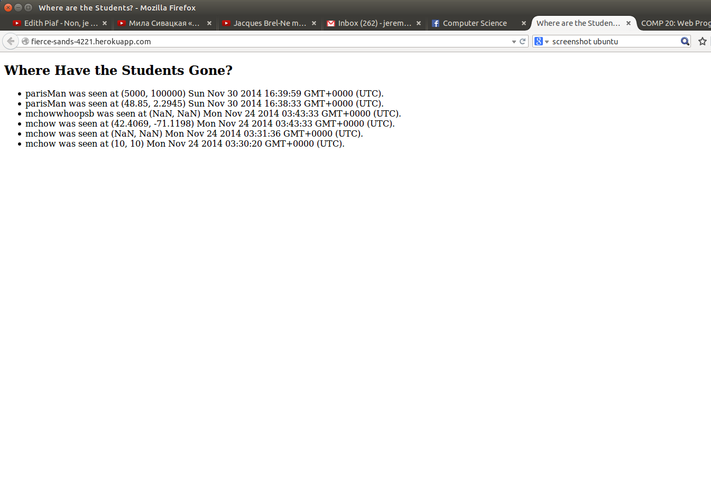
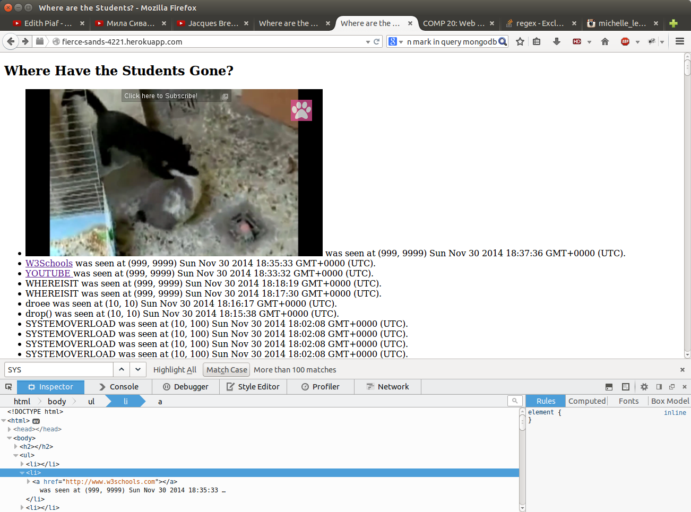

I was hired to examine security flaws of assignment 2 and 3. One is a client side tool designed to display locations of students and login information using the google maps api. The other, where I found the most security flaws, is a node application to be hosted on heroku, which stores student's login information in a mongodb database, also hosted on heroku. This back end program can return json files of all or a few students, depending on input, as well as the current red-line train locations. The following is the results of my findings:
First I examined the characteristics of the assignment, to seee if there were any flaws inherent in the design. Aside from the fact that there was no mention of security, nothing seemed incredibly off. I then checked the source code, and saw how the input paramaters for the post request were formatted. I fooled around for a bit with exploiting that.
I then examined the sendLocation header. I figured that a mongo injection must be possible. Howevwer, inputs seemed decently sanitized, and after an hour of attempting command injection I found myself with no results.
Having done the assignment before, I recalled that I had only signed up for limited database memory on heroku, since it was the free option. Knowing this, I wrote a bash script to repeatedly call curl on the sendLocation page, inputting data until the database was filled entirely.
While looking at the code I noticed that inputs into the database were being read as part of the html file, so I fooled around with exploiting that vulnerability.
Location Spoofing: This application has the implicit contract that users will send their location with their username. However, it is very possibile for users send fradulent information. This may impact the authenticity of the application
Cross Site Scripting: When user input becomes incorporated into html code, attackers can compromize the source code of the website, with as much ability to change the content as developers.
Cross Origin Resource Sharing: This site allows input and access from all other domains. A malicious site could redirect the user to your site, under the guise of being your site itself, and snatch private information that the user only intended for use by your website.
Denial of Service: A commonplace attack, when attackers send an exorbitant number of requests with the intention of overloading the server with too much data. This results in a shut down of the website, and is hence known as a denial of service attack.
note: how I found the issues is further discussed in the methodology section
The server does not verify the true location of individuals posting to /sendLocation. The website currently relies on data send in the form "lat__&lng__&login__", which can be easily editted or forged. In the image I provide, parisMan has a longitude that is clearly out of the range of reasonable longitudes. This is in the server.js file
This is a low severity security flaw as it allows individuals to forge their data, but does not jeapordize the website structure or data in any other way. the login string from the mongodb database is input directly into html code. Because this is a string input by the user, attackers can input their own code into that of the website while their inputs are in the database.
This is a high severity security flaw because it permits actual altering of the source code itself. This could potentially effect the entire website as a while and is a vulnerability which gives the attacker a lot of power. I was able to put a youtube video into the website using this method. This issue was found in the server.js file. As explained above, any site is permitted to send and recieve requests from this site. this can lend itself to CSRF attacks, in which a user sends data through a malicious website to yours. This can cause leakage of sensitive information
This is a medium level security threat. the leakage of information is harmful, but this site is designed to be available to most users anyway. The user must also be vigilant of social engineering attacks such as this. In addition, the information that is passed is location and login, which is not the most sensitive.This issue is found in the server.js file.
This is a medium level security threat. It does not leak user's sensitive information, just results in the temporary downing of the server. It can arise when attackers repeatedly send input or call requests from the server and overload it. In this instance, it is possible to overload the mongodb because the server has limited space.In total, it appears security was not considered in the construction of this application. If the intention is for the site to continue in existence for a while, I would recommend that the mongodb either have some routine cleanup function or be extended in size. In addition, inputs should be sanitized wherever they are input into the source code. Users should be monitored as well, with limits to those which can request data, and limits to how much data can be input in a given amount of time.